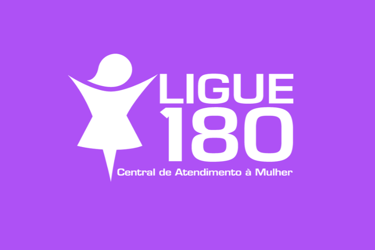

O Laço Lilás, mais conhecido como Agosto Lilás, é uma campanha de grande importância que luta contra a violência doméstica contra a mulher. Enquanto iniciativa governamental no combate à violência contra a mulher, foi estabelecido em 9 de setembro de 2022, quando a lei nº 14.448 foi sancionada pelo então presidente Jair Bolsonaro.
Esta lei 14.448/2022 determinou: "É instituído, em âmbito nacional, o Agosto Lilás como mês de proteção à mulher, destinado à conscientização para o fim da violência contra a mulher."
A violência contra a mulher no Brasil é um problema grave e real que acontece todos os dias, muitas vezes, dentro de casa e acaba sendo silenciosa, escondida, ignorada. Precisamos falar sobre isso e combater todas as formas de violência!
Existem diferentes tipos de violência: física, psicológica, moral, sexual e patrimonial. Todas são graves e causam muito sofrimento.
Denunciar é um ato de coragem. Se você presenciar ou sofrer violência, procure ajuda.